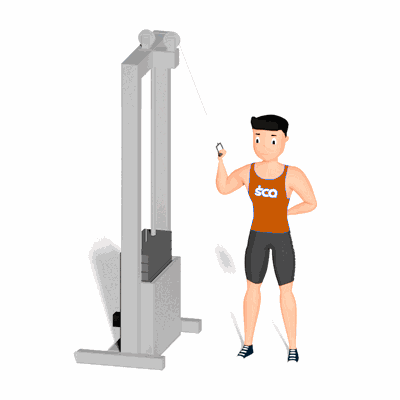

Abdominal Oblíquo no Cross Over com Polia Alta

Este exercício de alto impacto tem como objetivo fortalecer a musculatura do abdominal oblíquo, além disso, melhora a resistência muscular e auxilia na redução de gordura localizada.
Ficha Técnica
Tipo: Musculação
Grupo Muscular: Abdome
Aparelho: Nenhum
Músculos: Nenhum
Como realizar
- Fique em pé com o seu corpo perpendicular ao Cross Over com a polia fixado na altura máxima;
- Pegue um puxador estribo com a uma das mãos e segure-o com o braço ao lado do corpo;
- Coloque a outra mão no quadril;
- Sem flexionar os joelhos ou mover a parte inferior do corpo, incline-se para o lado na direção ao Cross Over;
- O puxador estribo deverá permanecer na sua lateral e proporcionar resistência ao movimento;
- Pause e depois retorne à posição inicial.
 RC STORE
RC STORE